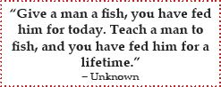

Learning is a central human activity and has important implications for school, career, and life. It is the foundation for success in and enjoyment of life. Now consider this: in all of your years of attending school, did anyone ever teach you how to learn? Probably not. This book will teach you how.
